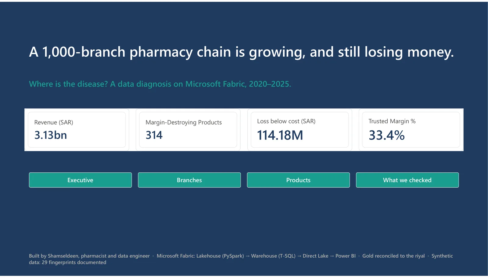
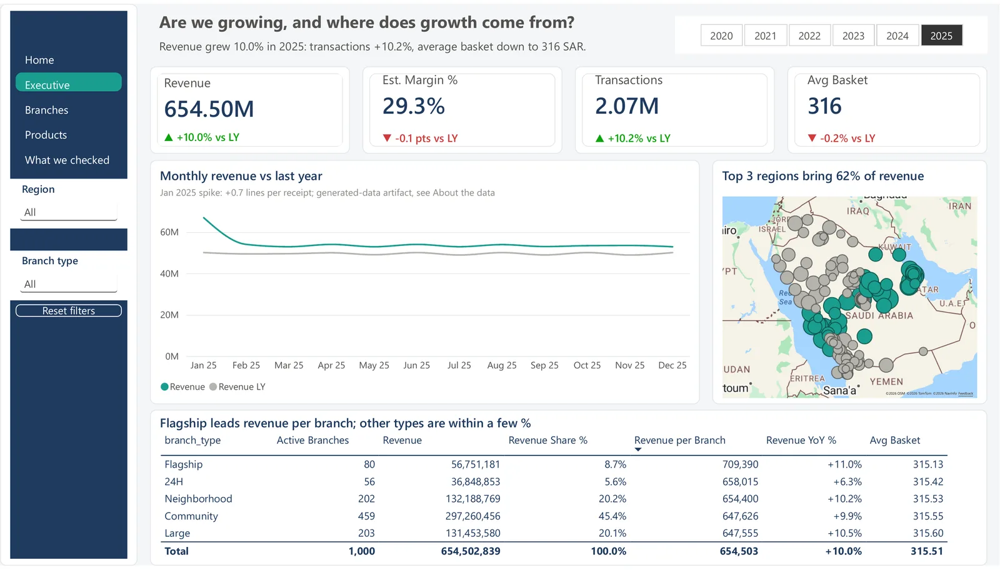
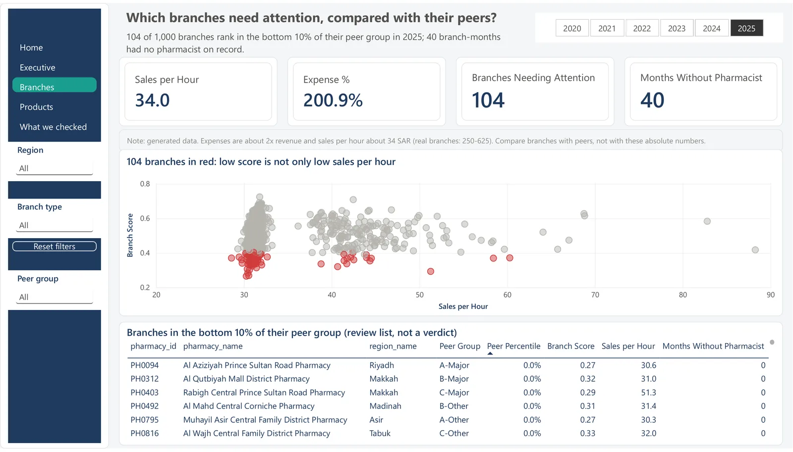
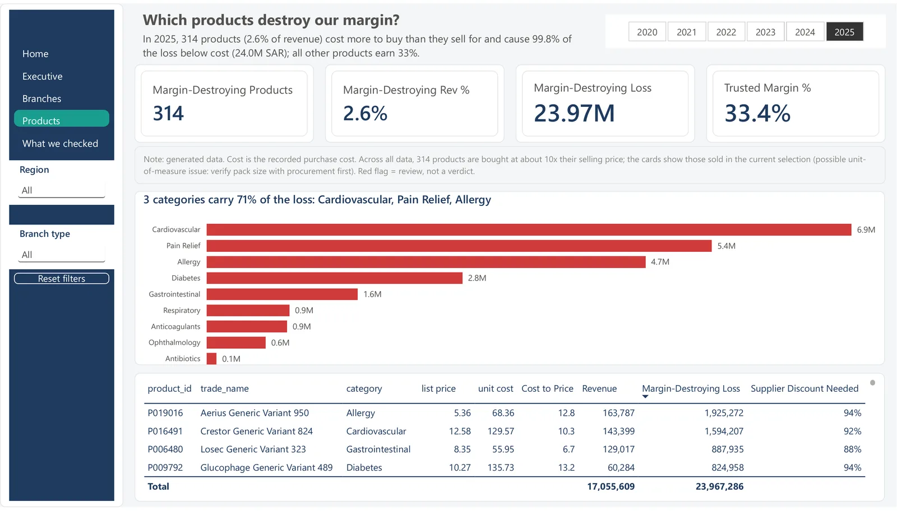
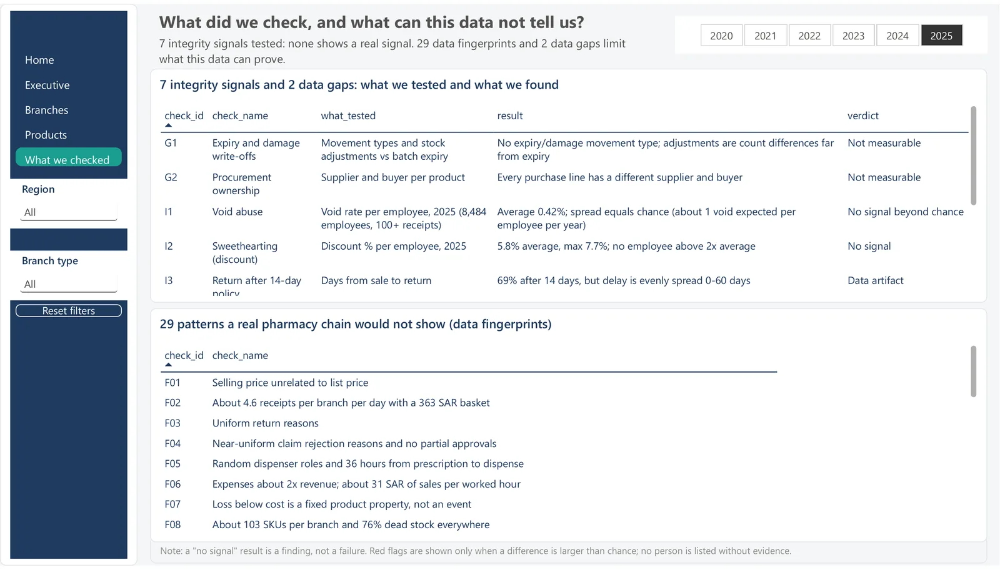
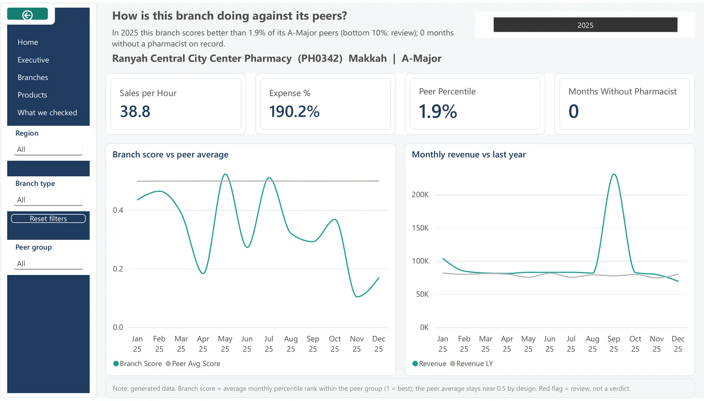

الإرجاع حق للعميل
محاسبة الصيدلي على المرتجعات تدفعه لرفض الإرجاع. لذلك أُخرجت المرتجعات من تقييم الفروع.
المشروع الرئيسي · Microsoft Fabric · مكتمل
سلسلة صيدليات من 1,000 فرع تزيد مبيعاتها كل سنة، ومع ذلك تخسر أموالًا. تتبعت البيانات من الكاشير حتى لوحة التقارير، ووجدت أين يذهب المال: 314 صنفًا تُشترى بسعر أعلى من سعر بيعها.

المحلل يفحص كل جزء من الشركة، ويستبعد السليم، ثم يضع يده على المرض. والمدير هو من يقرر العلاج.

المبيعات ترتفع كل سنة، في كل منطقة وكل نوع فرع. لا شيء في هذه الصفحة يبدو خطأ، ولهذا كان صعبًا اكتشاف المشكلة.

كل فرع يُقارن فقط بالفروع المشابهة له في الحجم ونوع المدينة. أضعف 10% تظهر بالأحمر كقائمة للمراجعة، وليس للعقاب. واضغط على أي فرع لتفتح صفحته.

هذه الأصناف 2.6% من المبيعات، لكنها سبب الخسارة كلها تقريبًا. ولكل صنف، يعرض التقرير الخصم المطلوب من المورد ليحقق هامش 20%: غالبًا أكثر من 90%. فيصير القرار بسيطًا: تفاوض، أو راجع حجم العبوة، أو أوقف الشراء.

قبل اتهام أي شخص، فُحصت 7 أنماط تلاعب شائعة، ولم يكن أي منها أقوى من الصدفة، فلم يُذكر اسم أحد. الثغرة الحقيقية ضابط مفقود: لا شيء يمنع شراء صنف بسعر أعلى من سعر بيعه.
المبيعات كانت تنمو، والفروع تعمل، والشركة ما زالت تنزف. المرض لم يكن حيث ينظر الجميع.
عشر سنوات في صيدليات التجزئة حددت ما يقيسه التقرير، وما يرفض قياسه.
محاسبة الصيدلي على المرتجعات تدفعه لرفض الإرجاع. لذلك أُخرجت المرتجعات من تقييم الفروع.
الإكسباير والتالف هما الأهم، لكن البيانات لا تحتوي سجلات إعدام. فيقول التقرير ذلك بدل اختراع مؤشر.
مشترو الأصناف الخاسرة يتصرفون مثل باقي المشترين. فالنتيجة ثغرة في الإجراءات، وليست شخصًا.
متوسط يساوي 0.40 بالضبط بدل 0.50 كشف خطأ حقيقيًا في طبقة البيانات، وأُصلح قبل النشر.
من البداية للنهاية على Microsoft Fabric، وكل طبقة مطابقة للريال ومحفوظة في Git.
72 جدولًا من المصدر، و60,234,021 صفًا، مطابقة للملفات الأصلية بفرق صفر.
58 جدولًا بمفاتيح وأنواع صحيحة، والمبالغ decimal(18,2)، وفحوص لقواعد العمل.
Star schema: 9 أبعاد، و9 جداول حقائق، و4 جداول تحليلية. و23 إجراءً مخزنًا تعيد بناء كل شيء في دقيقتين تقريبًا.
مقاييس مكتوبة بـ TMDL، و6 صفحات، وعناوين ديناميكية، وDrill-through، وأقل من ثانيتين لكل رسم.

اضغط بالزر الأيمن على أي فرع أحمر، واختر Drill through، لترى متى انخفضت درجته وكيف تحركت مبيعاته.
لا. بيانات اصطناعية لسلسلة صيدليات سعودية خيالية. والتقرير يوثق 29 نمطًا لا تتصرف فيه البيانات مثل سلسلة حقيقية، بدل إخفائها.
التقرير يعمل على سعة Microsoft Fabric. الصور أعلاه مصدّرة منه مباشرة، والكود لإعادة بناء كل شيء على GitHub.
صيدلي · مهندس بيانات مبتدئ ومحلل بيانات
متاح لوظائف Junior Data Engineer وData Analyst وBI في الرعاية الصحية والتجزئة.